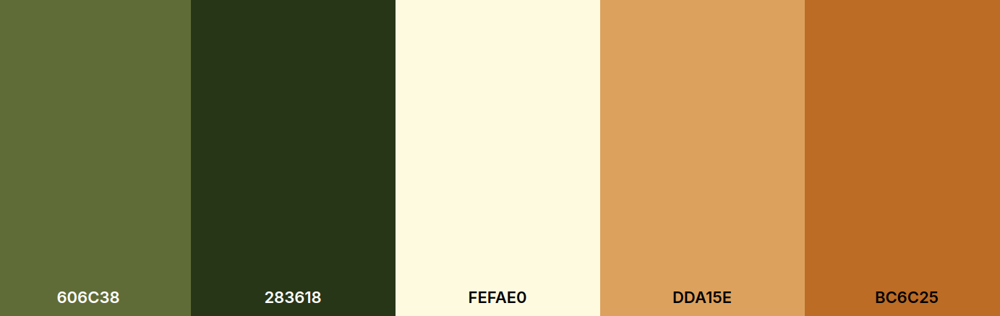

My Favorite Animals
Site Name
favoriteanimal.net
Site Purpose
This website is designed to share fun and interesting facts about animals, their habitats, and why they are important to our world. It’s a space for everyone who loves and wants to learn about animals.
Scenarios
- What are some fun facts about animals like lions, dolphins, and dogs?
- Where do different animals live, and what do they eat?
- How can we appreciate and help protect wildlife?
Color Schema
The primary color will be green to represent nature, with orange as a secondary color to highlight certain elements.
Neutral tones like black and white will be used for text to ensure readability.
Typography
Lobster typography will be used for titles and subtitles to create a playful feel.
For headings, subheadings, and special titles. It gives a playful and engaging feel, perfect for capturing attention and setting a fun tone.
Roboto typography will be used for paragraphs and other text to keep it clean and easy to read.
For the body text, paragraphs, and general content. It is clean, modern, and highly readable, making it suitable for providing detailed information.